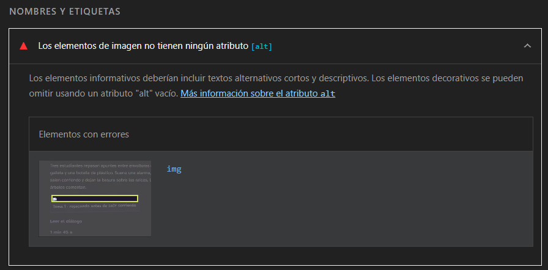
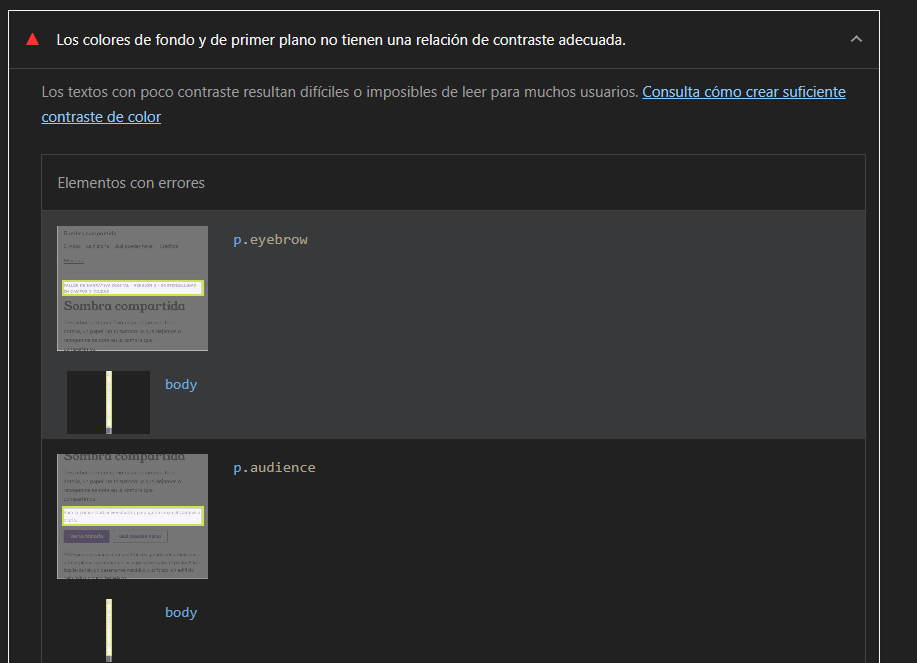
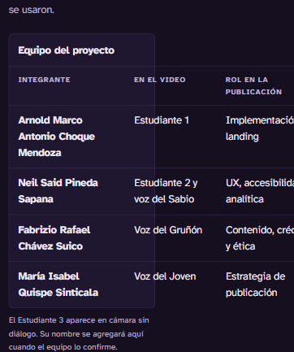
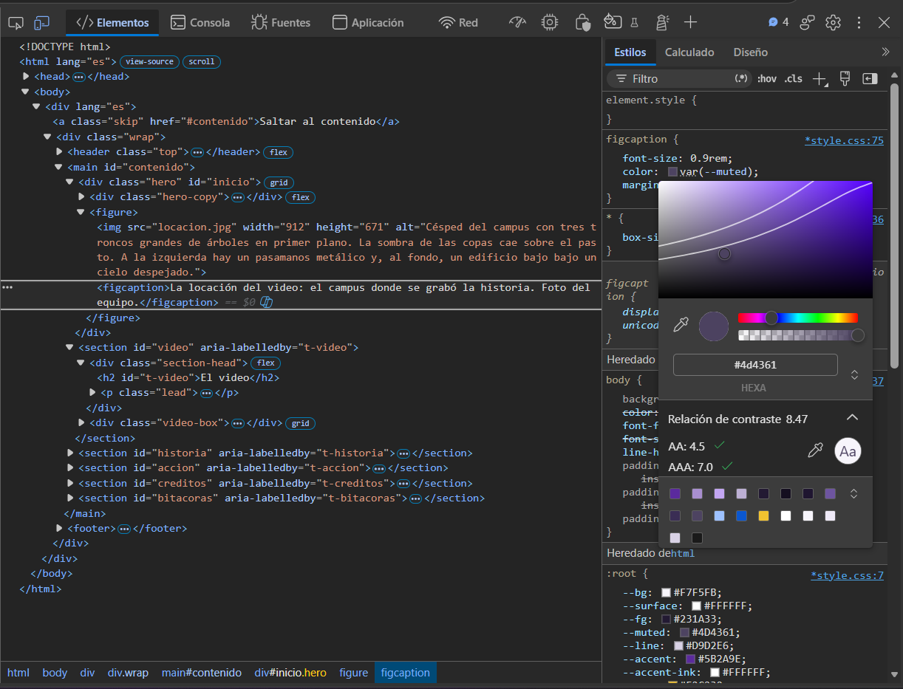
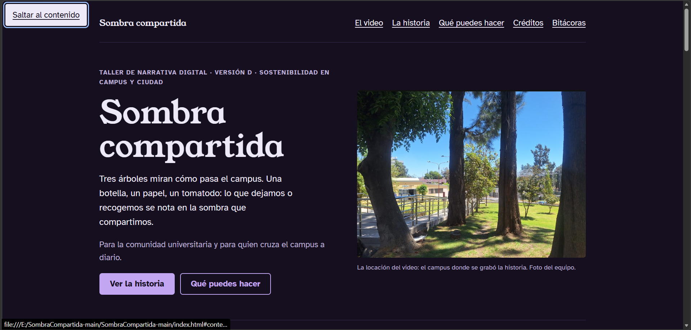
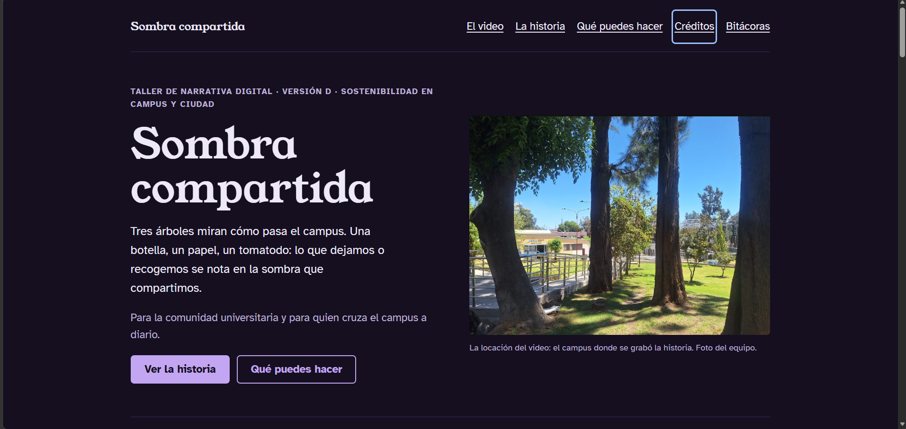
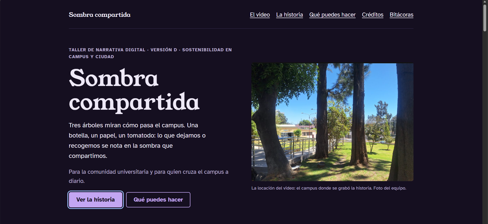

Bitácora · UX, accesibilidad y analítica
Neil Said Pineda Sapana
Entregables
| Entregable | Carpeta | Estado |
|---|---|---|
| Lista de fallas (celular y PC) | 00_Control | Completado |
| Reporte de continuidad | 00_Control | Completado |
| Textos alternativos de las imágenes | 04_Accesibilidad | Completado |
| Capturas de contraste y navegación con teclado | 04_Accesibilidad | Completado |
| Borrador del protocolo para los 5 usuarios (adelanto de la semana 15) | 06_Pruebas_usuarios | Por completar |
| Mi bitácora | 09_Bitacoras_y_Evaluacion | Completado |
Módulo para demostrar
La auditoría de accesibilidad y cómo se priorizaron las fallas.
La auditoría de accesibilidad se realizó sobre la página principal (index.html) usando las herramientas del navegador: el informe de accesibilidad de Lighthouse, el selector de color para comprobar el contraste y la vista móvil de 360 píxeles de ancho. También se revisaron la navegación con teclado mediante la tecla Tab, el orden de los títulos, los textos alternativos de las imágenes y los enlaces internos.
Las fallas se priorizaron según su impacto real en la lectura y el uso de la página: Alta cuando impiden o dificultan mucho acceder al contenido (por ejemplo, en lectores de pantalla o baja visión, como ocurre con la falta de texto alternativo o el bajo contraste), Media cuando exigen esfuerzo adicional o hacen perder parte de la información sin bloquear el resto de la navegación (como el corte de la tabla en móvil), y Baja cuando solo afectan la apariencia.
Detalle de cada entregable
Lista de fallas (celular y PC)
Cada falla se buscó con las herramientas del navegador: el informe de accesibilidad (Lighthouse), el selector de color para medir el contraste y el modo celular con 360 píxeles de ancho. Para cada una se anotó dónde ocurre, en qué dispositivo, qué tan grave es, quién la corrige y la captura que la muestra.
| N.º | Falla encontrada | Dónde ocurre (página / toma / nodo) | Dispositivo | Severidad | Responsable | Fecha límite | Estado | Captura / evidencia |
|---|---|---|---|---|---|---|---|---|
| 1 | La imagen de la toma 1 no tiene texto alternativo | Landing, toma 1 | Ambos | Alta | Arnold | Abierta | F01_alt_toma1.png | |
| 2 | Los textos secundarios tienen contraste insuficiente en modo claro | Landing, textos de apoyo y pies de foto | Ambos | Alta | Neil | Abierta | F02_contraste.png | |
| 3 | La tabla de créditos se corta y no se puede desplazar | Landing, sección Créditos | Celular | Media | Arnold | Abierta | F03_creditos_celular.png | |
| 4 | ||||||||
| 5 | ||||||||
| 6 |
Evidencias
F01: imagen sin texto alternativo


F02: contraste insuficiente en textos secundarios


F03: tabla de créditos cortada en celular


Criterio de prioridad
- Alta: impide o dificulta mucho que una persona lea o use la página, por ejemplo quien usa lector de pantalla o tiene baja visión.
- Media: la página se puede usar, pero con esfuerzo o con pérdida de información.
- Baja: afecta solo la apariencia.
- F01 (Alta): sin texto alternativo, la imagen no se describe a quien no la puede ver.
- F02 (Alta): el texto de apoyo es difícil de leer con baja visión o con mucha luz en el celular.
- F03 (Media): en celular se pierde parte de la tabla, pero el resto de la página funciona.
Resultado: se registraron 3 fallas, 2 de prioridad alta y 1 de prioridad media. En index.html, la página real, el código ya incluye el texto alternativo, el color con buen contraste y el desplazamiento de la tabla de créditos.
Reporte de continuidad
- Lo que ya funciona: el menú lleva bien a las secciones sin enlaces rotos y desde créditos se puede volver al inicio clicando el título de arriba.
- Lo que falta: todavía no está el enlace del video (dice "En montaje") y quedan por revisar los tramos siguientes (video → interacción, interacción → extensiones y extensiones → créditos).
- Pendientes y encargados: María Isabel pone el enlace del video, y Neil ve los tramos que faltan y agrega el botón/enlace de "Volver al inicio".
Textos alternativos de las imágenes
| Imagen | Texto alternativo |
|---|---|
| toma1.jpg | Dos estudiantes sentados en el pasto entre los troncos de los árboles. Uno sostiene una hoja de apuntes y el otro mira sus manos. Junto a ellos hay envolturas y una botella |
| C01_contraste_claro_texto_gris.png | Captura de la parte superior de la página con el enlace Saltar al contenido visible y con borde de foco |
| T03_teclado_boton.png | Captura del botón Ver la historia con el borde de foco del teclado visible |
Capturas de contraste y navegación con teclado
Las pruebas se hicieron en index.html, la página real, con las herramientas del navegador. Se revisó que los textos se puedan leer con claridad y que toda la página se pueda recorrer sin mouse.
Contraste
El contraste es la diferencia de brillo entre el texto y su fondo. Se pide una relación mínima de 4,5 para texto normal. Se midió el texto gris de apoyo (el pie de la foto) en modo claro, porque es el color más claro que se usa para texto en la página.
C01: contraste del texto gris en modo claro


Solo se tomó captura del texto gris en modo claro. Los demás colores se calcularon con la fórmula de contraste y no tienen captura:
| Combinación de colores | Modo | Relación | Mínimo | Resultado |
|---|---|---|---|---|
| Texto principal sobre el fondo | Claro | 15,3 | 4,5 | Cumple |
| Texto de apoyo sobre el fondo | Claro | 8,5 | 4,5 | Cumple |
| Texto de apoyo sobre tarjeta blanca | Claro | 9,2 | 4,5 | Cumple |
| Enlaces y títulos morados sobre el fondo | Claro | 8,6 | 4,5 | Cumple |
| Texto blanco sobre botón morado | Claro | 9,3 | 4,5 | Cumple |
| Etiqueta “En montaje” | Claro | 10,4 | 4,5 | Cumple |
| Texto principal sobre el fondo | Oscuro | 15,7 | 4,5 | Cumple |
| Texto de apoyo sobre tarjeta | Oscuro | 8,5 | 4,5 | Cumple |
| Enlaces morados claros sobre el fondo | Oscuro | 9,0 | 4,5 | Cumple |
| Texto del botón sobre botón morado claro | Oscuro | 9,0 | 4,5 | Cumple |
Navegación con teclado
Algunas personas no pueden usar el mouse y recorren la página con la tecla Tab. Para eso, el foco (el borde que marca dónde está el teclado) debe verse siempre. Se recargó la página y se avanzó solo con Tab, sin usar el mouse.
T01: enlace “Saltar al contenido”


T02: foco en el menú


T03: foco en un botón


Resultado: no se encontraron fallas de contraste ni de navegación con teclado en la página real. El foco se ve en el enlace de salto, el menú y los botones.
Borrador del protocolo para los 5 usuarios (adelanto de la semana 15)
Objetivo: evaluar la facilidad de uso, claridad del recorrido narrativo y legibilidad de index.html tanto en celular como en computadora antes de la entrega final.
Participantes y modalidad: 5 usuarios (3 en celular y 2 en computadora), con sesiones individuales de 10 a 15 minutos bajo la técnica de pensar en voz alta (el usuario comenta lo que ve, busca y espera mientras navega).
Tareas de prueba
| N.º | Tarea | Qué se observa |
|---|---|---|
| 1 | Primera impresión: mirar la portada sin hacer clic y explicar de qué trata el proyecto. | Claridad del título, texto introductorio y botón principal («Ver la historia»). |
| 2 | Acceso al video: ubicar la historia principal e intentar reproducirla. | Si se entiende el estado actual («En montaje») y la ficha de datos del video. |
| 3 | Recorrido narrativo: avanzar hacia las secciones de interacción y extensiones. | Fluidez del menú, enlaces internos y continuidad entre bloques. |
| 4 | Lectura de créditos: identificar a los integrantes del equipo y sus roles. | Legibilidad y desplazamiento horizontal de la tabla de créditos en celular. |
| 5 | Retorno al inicio: volver a la parte superior desde la sección de créditos. | Facilidad para encontrar el enlace o botón de regreso al inicio. |
Registro de resultados y cierre
- Métricas por tarea: se anotará si el usuario completó la tarea sin ayuda, con dificultad o si no logró completarla, además de los errores o dudas expresadas en voz alta.
- Preguntas finales: (1) ¿Qué parte te resultó más clara o interesante?, (2) ¿Tuviste problemas para leer algún texto o usar algún botón en tu pantalla?, (3) ¿Qué cambiarías para que se entienda mejor?
Registro de actividades
Lo que hice, con fecha y resultado.
-
Revisé los archivos index.html y style.css para ver cómo se comportan en pantalla de computadora y de celular.
Resultado: la página ya tenía la configuración básica para celular y un cambio de diseño a 800 px. Se identificaron mejoras para pantallas pequeñas.
-
Agregué ajustes en style.css: botones a ancho completo en celular, datos del video en una sola columna, menos espacio interno en tarjetas y control de texto largo y de desbordes.
Resultado: la página se adapta a tres rangos: celular (hasta 480 px), tableta (hasta 800 px) y computadora.
-
Creé la sección de bitácoras con un bloque por integrante y su estilo en style.css.
Resultado: cada integrante tiene un espacio propio para su registro.
-
Redacté mi bitácora con el desarrollo de esta tarea. Para el trabajo se usó Claude, asistente de IA, como se indica en los créditos.
Resultado: bitácora propia completa hasta esta fecha.
-
Realicé la auditoría del landing: revisión de enlaces internos, textos alternativos, orden de títulos, contraste de colores y comportamiento en celular y computadora. Agregué ícono de la pestaña y color de la barra del navegador en celular.
Resultado: informe en AUDITORIA.md. No hay enlaces rotos ni imágenes sin texto alternativo, y el contraste cumple. Quedan pendientes las medidas de 4 imágenes y la prueba en un celular real.
-
Separé las bitácoras en una página por integrante y preparé en la mía los espacios para cada entregable.
Resultado: cada integrante edita solo su archivo, lo que evita conflictos al subir cambios a Git.
-
Creé una copia de prueba del landing (index-prueba.html y style-prueba.css) con 3 fallas introducidas a propósito: texto alternativo, contraste y tabla de créditos en celular.
Resultado: lista de fallas para practicar la auditoría. La página real quedó sin cambios.
-
Tomé las capturas de contraste y de navegación con teclado en la página real: una de contraste del texto gris (C01) y tres de teclado (T01 a T03), y redacté su descripción.
Resultado: apartado completo. No se encontraron fallas de contraste ni de teclado.
-
Completé la lista de fallas con las 3 fallas de la copia de prueba, sus capturas, el criterio de prioridad y la corrección de cada una.
Resultado: lista de fallas completa, con 2 fallas de prioridad alta y 1 de prioridad media.